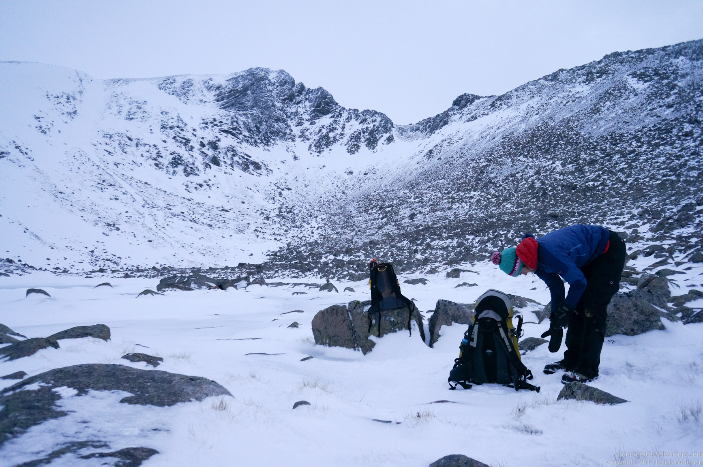

It was one of those weekend days where we got up slowly, decided to do a little walk, tossed in some crampons and axes just in case, and were off to the Cairngorms.
The Cairngorms is a national park, about an hour drive from our house you are right at the ski-park, which is ideal, because it is one of the rare places in Scotland where you can start your walk from quite high up, making for a great short day and leaving time to play. This is the most popular winter climbing take-off point for this area as well, as only a one hour hike from there brings you to the North face of Coire an t-Sneachda, where many summer and winter climbs of all levels can be found. On a weekend with good conditions it's always fairly busy. Just like today. But, we weren’t going to climb, just do some exploring…
The next corrie over is Coire an Lochain. A lochain is a little lake, and unsurprisingly, there is a little lake at the bottom of the cliffs. Also here good climbs can be found. Between the cliffs of the two corries is a ridge, which is called Fiacail ridge. The ridge starts out very brought, and we were just going up a little bit, but we always wanted to see what would be just over the next wobble. Further it narrowed to a crest, which we walked on for a bit, but because of the wind decided that passing this on the right would probably be safer.
We soon came to the point where we either really had to go down, or decide to keep going, as it would take considerable effort to down climb, and it was getting late. We crawled behind a rock to be out of the wind for a while, and decided to keep going.

The last bit was fun, as it required scrambling over some larger rocks through some steeper terrain. With crampons and axes, it was quite easy to navigate. Some parties were coming down this way, but we decided to keep going. On the left, climbers kept on popping up, setting up belays and belaying more people up, indicating that we were now at the tops of the climbs from Coire an t-Sneachda. Some went up with us, others took the ridge down. We kept on walking, and when halfway Sneachda decided to have a look at the goat trail. It is a pretty steep trail, and often there is substantial avalanche risk, but today the conditions were fine. The start was a little nerve wracking because the wind tore over the edge of the corrie, but as we were getting lower it turned out fine. It was a beautiful but windy day, but really enjoyable to see the wintery conditions, and have the axes and crampons out to play with.